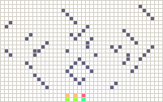
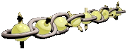

|

|
Cellular automata
|
#(ps,#(rs))
|
Hystorical
- TRAC4 ("MACAR89")
- Macro-language based on
TRAC T64
- LZ -
Sources for Lazarus and Delphi version
- ABC - Sources for
PascalABC.NET version
- doc -
Brief description of functions
- examples -
Couple examples with programs for TRAC (Factorial and save file)
|
|

|
Qubit Chain
- quchain
- root direcory for project
- IBM-QE
- IBM Quantum Experience examples direcory
|